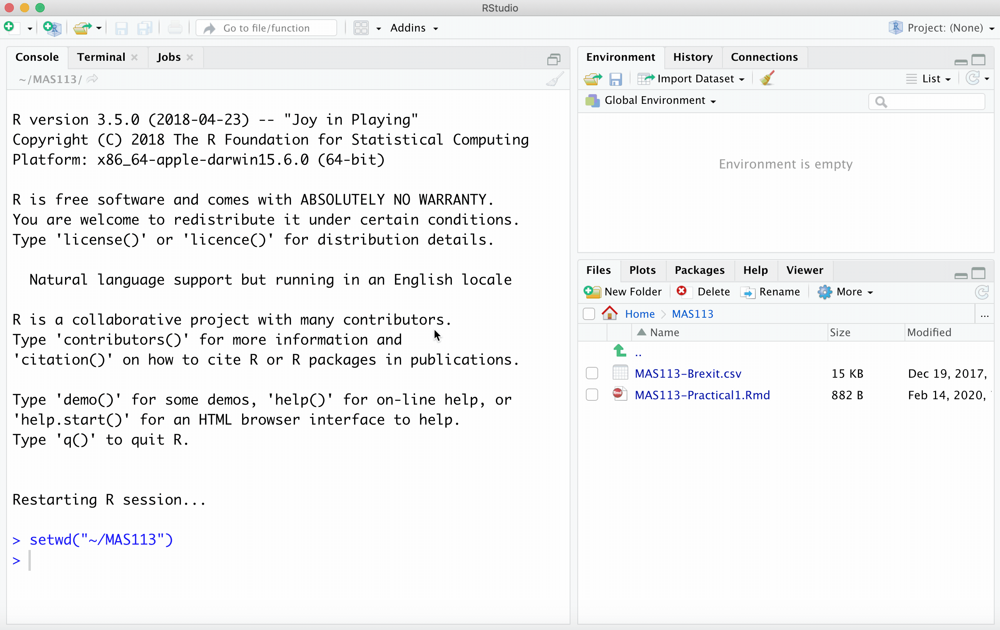
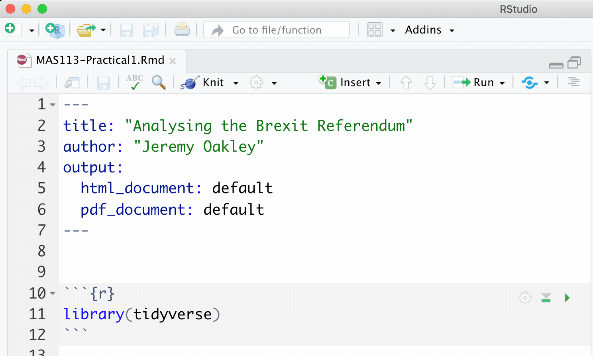

1 R Practical 1: Brexit
1.1 Introduction
The spreadsheet Brexit.csv, available on Blackboard, contains data from the 2016 referendum on the UK’s membership of the European Union.
Each row represents one local authority district in the UK. The columns are as follows.
Region: a geographical region of the UK in which the district is located;Area: the name of the local authority district;remain: the percentage of votes in the district to remain in the European Union;unemployed: the percentage of unemployed residents in the district, aged 16 to 74, in 2011.level4: the percentage of residents in the district, aged 16 to 74, with qualifications at level 4 and above in 2011. (An A-level is a level 3 qualification).medianage: the median age of residents in the district, in 2011.
(To simplify this practical, we have omitted the data for Northern Ireland and Gibraltar. Their remain vote percentages were 55.78% and 95.51% respectively.)
Your task is to investigate whether there is any relationship between the remain vote percentage in each district and the other variables.
1.2 Tasks
- If you haven’t already done so, create a folder for this module on your computer (or U: drive if on campus). Inside that folder, create another folder:
Practical 1.
- Download the files
Brexit.csvandPractical1.Rmdfrom Blackboard, and put them into yourPractical 1folder. Open the fileBrexit.csvto inspect it.
- Open the R Markdown document
Practical1.Rmdin RStudio.- Change the author to your name
- Run the first code chunk to load the
tidyversepackage (click on the green arrow).

Your solutions to the remaining tasks should all go in this R Markdown document, with one code chunk per task.
- Import the data
Brexit.csvinto R, storing it as a data frame calledbrexit. Inspect the first ten rows. Check this against the data in Excel.
- Copy and modify this lecture notes example: importing data
- Here, rather than
maths.csv, you are importing a file calledBrexit.csv. - You need to store the result as
brexitrather thanmaths.
- What were the lower quartile, median and upper quartile of percentage of remain voters in the 380 districts?
You can get the median and quartiles using the summary() command. Here is an example.
- Find the percentage of the remain voters in
Sheffield. (You will need to select the row from theBrexitdata frame in which theAreacolumn takes the valueSheffield).
You could just search through the spreadsheet, but you should practise using the filter() command to select rows from a data frame. Here is an example.
- Find the districts with the highest 10 percentages of remain voters and lowest 10 percentages of remain votes. What do you notice about the regions?
You can use the arrange() command to arrange the rows of the data frame in order of the remain variable. Here is an example.
Produce three scatter plots, with the remain vote percentage on the \(y\)-axis in each plot, and each of the
unemployed,level4,medianagevariables on the \(x\)-axis. For each plot- change the axes labels to make them more informative;
- display a linear trend on each scatterplot;
- use different colours of points to represent different regions;
- add a caption to your plot, which includes the value of Pearson’s correlation coefficient between the variables, and states what conclusion you would draw from the plot.
- Use a separate code chunk for each plot.
- To produce a basic scatter plot, look at the example here.
- To use different colours per region, and to add proper axes labels, see this example on customising a scatter plot.
- Here’s an example of adding a linear trend
- Use the
cor()command to compute Pearson’s correlation. Here’s an example.- To add the caption, you need to include an argument
fig.cap = "Put your caption here"as a chunk option in your R Markdown document.
- To add the caption, you need to include an argument
- Obtain the mean percentage of the remain voters in each
Region, and arrange in order of the mean remain vote.
- You’ll need to make use of the
group_by()andarrange()commands.
- Here is an example of computing summaries per group
- Make sure you understand how the “pipe operator”
%>%works for chaining commands together. Here is an example.
- Produce a web page that presents your solutions.
- Click on the Knit arrow, and choose the output type.

To customise the appearance of your document, please refer to the tutorial notes and video on code chunk options.
If you get an error, two possible problems are
- You have an
install.packages()command somewhere in your R Markdown document: delete it. It’s best to runinstall.packages()commands in the console, as they only need to be run once. - There is no command within your R Markdown document that loads the data (you imported the data some other way).
1.3 Data sources
The data were obtained from (https://www.electoralcommission.org.uk/find-information-by-subject/elections-and-referendums/past-elections-and-referendums/eu-referendum) and (https://www.nomisweb.co.uk/)
Age by district: (https://www.nomisweb.co.uk/query/construct/summary.asp?mode=construct&version=0&dataset=145)
Economic activity: (https://www.nomisweb.co.uk/query/construct/summary.asp?mode=construct&version=0&dataset=1511)
Education: (https://www.nomisweb.co.uk/query/construct/summary.asp?mode=construct&version=0&dataset=1510)
All data accessed 12/10/17.